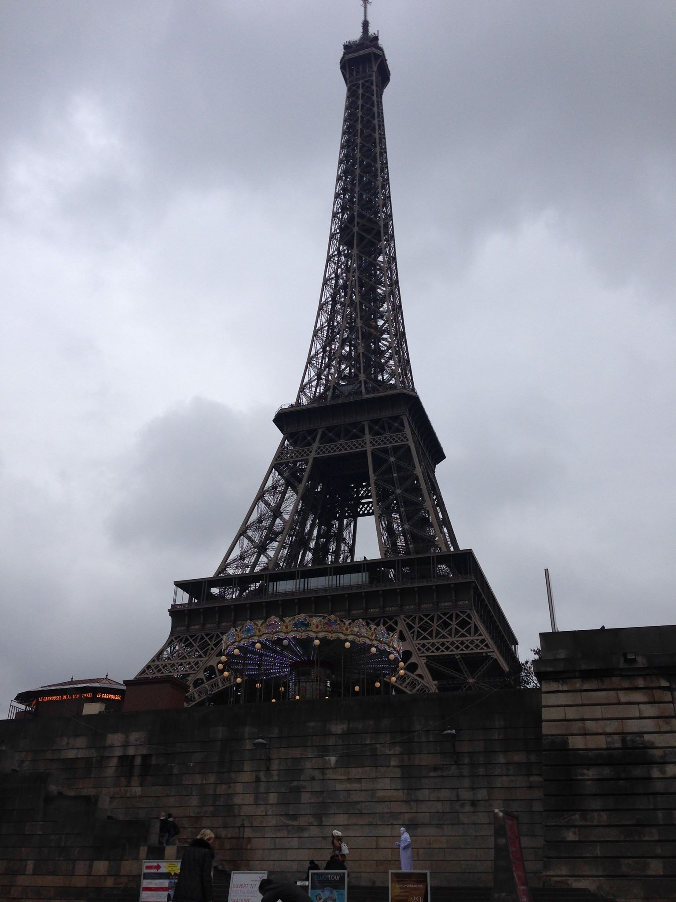
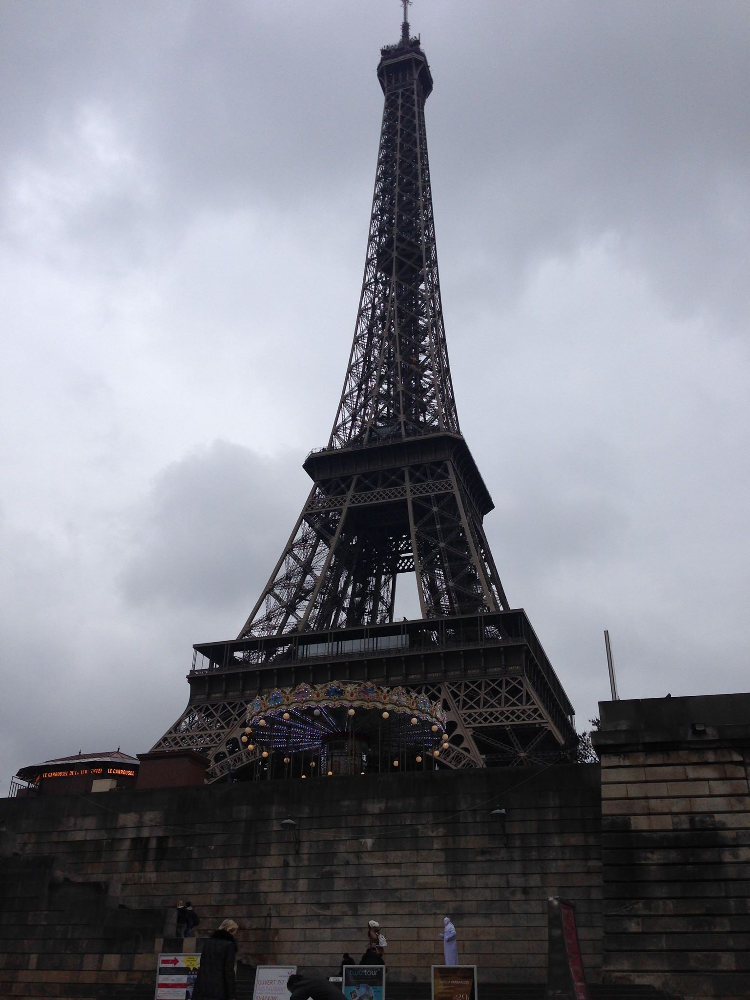

Overlooking the river. |

Heading to the top of the Eiffel Tower.
|
|
Overlooking the river. |

Heading to the top of the Eiffel Tower.
|
During 2015 I decided to visit parts of Europe. This included Italy and France.
Heading up the Eiffel Tower is not for the faint of heart!
I managed to sample some frogs legs but they were so small. Snails were too far for me!